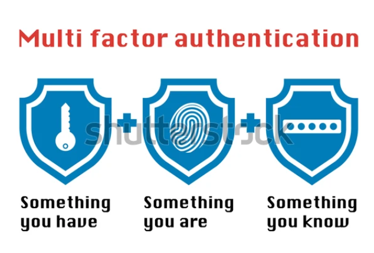
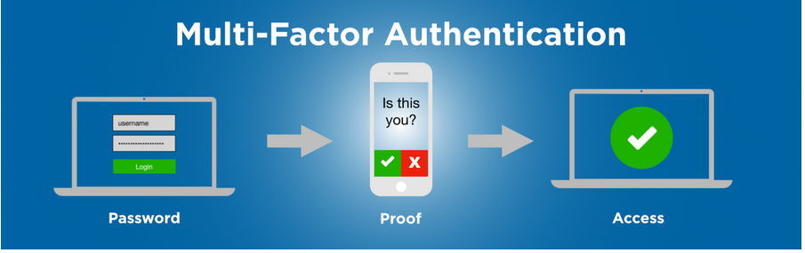
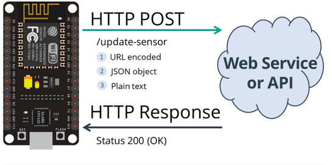
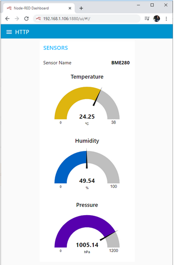
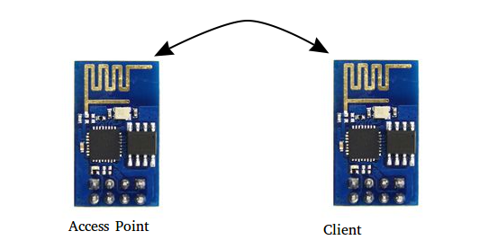
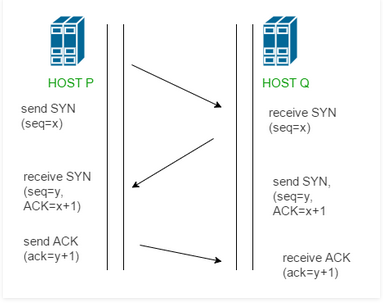

Notes For mpily
About
This is a sort of rough notebook where I keep rough notes and short cuts for stuff I usually forget. Feel free to go through them. Though they are highly tailored for my use and thus might not suit you as well.
- Version: 1.0
- Author: Harnish Design
- Created: 8 April, 2020
- Update: 12 May, 2020
If you have any questions that are beyond the scope of this help file, Please feel free to email via Item Support Page.
Some basic Git and GitHub Commands

Below are some of the common Git Commands:
-
git init -
git add 'file or directory name' -
$ git commit -m "comit message in quotes" -
$ $ git push "remote_URL/remote_name" "branch" -
$ $ git pull "branch_name" "remote_URL/remote_name" -
$ $ git merge "branch_name" -
$ $ git checkout -b "new_branch"$ $ git checkout "branch_name"
While in the directory you wish to make a git repository the above command will initialize a git repository in that directory.
Adds files in the to the staging area for Git. Before a file is available to commit to a repository, the file needs to be added to the Git index (staging area). There are a few different ways to use git add, by adding entire directories, specific files, or all unstaged files.
Record the changes made to the files to a local repository. For easy reference, each commit has a unique ID.
Sends local commits to the remote repository. git push requires two parameters: the remote repository and the branch that the push is for.
Is used to get the latest version of a repository.
integrates branches together.
Used to start working on a different branch. The -b option creates a new branch.
MultiFactor Authentication
What is MultiFactor Authentication
It is an electronic authentication method in which a user is granted access to a website or application only after successfully presenting two or more pieces of evidence (or factors) to an authentication mechanism: knowledge (something only the user knows), possession (something only the user has), and inherence (something only the user is). MFA protects the user from an unknown person trying to access their data such as personal ID details or financial assets. 
Why Use MultiFactor Authentication
Simple one step verification is just not enough. Not even for Google. Google admitted that hackes steal about 250000 web logins each weed In MFA we aren't doing away with passwords and logins, we instead are layering another layer of information. For example someone could link a cell phone to the account and then during login they are asked to provide evidence that they are the owner through receiving a message from the cell phone. 
Who is Using MultiFactor Authentication
- At the top of the list is definitely Google. In fact Google has been using it since 2011
- Git Hub is also moving to 2FA. In fact you can configure 2FA on your Git Hub account by following these steps
- Microsoft Azure. Obviously given how valuable their data isYou can read more about it here
Types of MultiFactor Authentication
- Time Based One Time Password: Automatically generates an authentication code that changes after a certain period of time. You can use apps such as :
- Two Factor authentication using text message:
- Using a Security Key: Can use finger Print or Window Hello.
IOT Communication Protocols
We know that at the foundation of IoT is the communication aspect. The sending and receiving of information. The question at hand is how to do this. The following Internet Protocols can be used to accomplish this task:
-
HTTP
This is one of the simplest means. In this case the controller sends information to a webpage. In HTTP we use the POST and GET routines in order to achieve the communication. Taking an example of a NODE MCU that is used to keep a record of the weather in a particular location, the MCU will 'POST' the data to a web server/API and receive an OK HTTP response from the server. An Outline of this process may look like:  The output may end up looking like this:  Unfortunately HTTP is not very secure and thus for crucial applications such as in hospitals is not appropriate.
-
UDP
User Datagram Protocol is one of the core members of the internet protocol suite. It allows computers to send messages (datagrams) to other computers in an IP network. UDP uses a simple connectionless communication model with a minimum of protocol mechanisms. It has no handshaking dialogues, and thus exposes the user's program to any unreliability of the underlying network; there is no guarantee of delivery, ordering, or duplicate protection. UDP is suitable for purposes where error checking and correction are either not necessary or are performed in the application; UDP avoids the overhead of such processing in the protocol stack. Time sensitive applications often use UDP because dropping packets is preferable to waiting for packets delayed due to retransmission, which may not be an option in a real-time system. UDP is also advantageous in that it allows clients to communicate to each other without the need of a web server. 
-
TCP
The main characteristic of TCP is that a connection between client and server is established before data is sent. The figure below shows the 3-way handshake between 2 hosts P and Q. A 3 way handshake is carried out in which connection between the 2 hosts is established. Because of this there is less data loss. Also, this 3 way handshake can be used to improve security over the network.

>
MICROPORCESSORS AND MICROCONTROLLERS
A microcontroller is essentially a small computer on a chip. And as such it has memory, a processor and I/O. Below is the architecture of the Atmega32.A microprocessor on the other handis a computer processor wherein the data processing logic and control is included on a single integrated circuit, or a small number of integrated circuits. The microprocessor contains the arithmetic, logic, and control circuitry required to perform the functions of a computer’s central processing unit. Below we have the block diagram of the Z80microprocessor.
| Microcontroller | Microprocessor it Uses |
|---|---|
| Atmega328 | 8-bit AVR |
| ESP8266 | Tensilica Diamond Standard 106Micro (aka. L106) @ 80 MHz (default) or 160 MHz |
Companies in Kenya that apply Microprocessors and microcontrollers
- Africa's Talking
- Gear-Box
- Numeral-IoT
- Twiga Foods
- Coco Networks
- EABL
- Apollo Agriculture